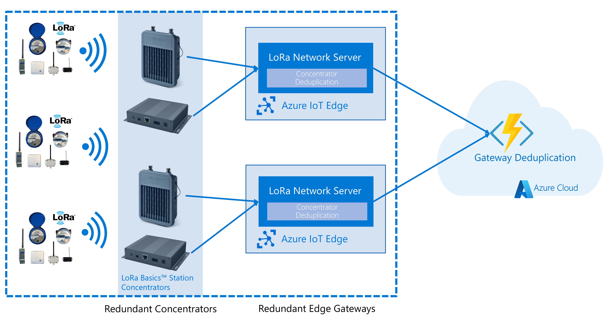

Deployment Scenarios
The Starter Kit support a wide variety of deployments, and this article will highlight some of them.
- Keep data on-premise
- Redundancy with multiple concentrators and gateways
- Deployment on Windows Server
- Deployment of IoT Edge in the cloud
Other scenarios are supported, and combinations of the below scenarios are possible.
Keep data on-premise
It is possible to deploy Azure IoT Edge on your own hardware, and keep all data in your local network or infrastructure. For example, by using a custom local forwarding module, it is possible to route the data to a local queue or message bus. In this case, the sensor data will never leave the on-premise network, and the connection to Azure will be used for managing the devices, handling the deduplication or managing concentrator updates for example.

Scalability & Availability
Note: This guide is only talking about the LBS/LNS deployment configuration. For the full solution, the function endpoint, IoT Hub and Redis need to be taken into consideration as well. There is documentation for all of these services explaining the different options for HA and scalability.
Single concentrator with single LNS
This is the most basic deployment you can chose. It does only deploy 1 concentrator and one network server. Each sensor can at most reach a single concentrator.
Advantages
- Scalability: this model scales very well. There is no additional overhead to deduplicate messages, nor do we need to determine who is winning the race to potentially send messages back to the device. Also, no additional edge hub keeps a connection for the leaf device, which helps with the scale requirement on the IoT Hub itself.
- Simple: the deployment is simple to start with and maintain.
- Low cost: No redundant hardware is used, which helps keeping the operational cost down.
Disadvantages
- Availability: this solution has 2 points of failure: the concentrator and the network server. Either of those can go down. The result in the worst case is loss of messages.
- Limited reach: Since there is only a single concentrator, you have to put all your sensor within reach of that concentrator.
- Reliability: message delivery might be impacted.
Recommended settings
| Target | Setting | Value |
|---|---|---|
| Device Twin | KeepAliveTimeout | undefined or 0 |
| Device Twin | Deduplication | None |
| Device Twin | GatewayId | The Id of the Network Server |
| Edge Hub environment variable | MaxConnectedClients | Depends on number of devices |
| Network server environment variable | IOTHUB_CONNECTION_POOL_SIZE | Depends on the number of devices |

Multi concentrator with single LNS
Multiple concentrators are deployed that reach a single network server. Each sensor can reach one or multiple concentrators. Depending on the goal of the deployment (availability and/or reach).
Advantages
- Scalability: this model scales very well. It's a bit more overhead than the single concentrator / single gateway model as it will have to deduplicate messages coming in from the additional concentrators. During scale tests we verified that this scenario scales up to at least 900 OTAA devices, broadcasting a message every 3 minutes to 4 concentrators.
- Relatively simple
- Low cost
- Partial redundancy: if the deployment is designed to ensure that each sensor can reach at least 2 concentrators, you get higher availability than with single/single.
- Reach: if you deploy for reach, you can get a larger support a larger geographical deployment. To combine reach with availability, the cost will raise.
Disadvantages
- Availability: Depending on the deployment, this solution has at least one single point of failure: the network server. The result in the worst case is loss of messages.
- Reliability: message delivery might be impacted.
Recommended settings
| Target | Setting | Value |
|---|---|---|
| Device Twin | KeepAliveTimeout | undefined or 0 |
| Device Twin | Deduplication | None |
| Device Twin | GatewayId | The Id of the Network Server |
| Edge Hub Environment variable | MaxConnectedClients | Depends on number of devices |
| Network server environment variable | IOTHUB_CONNECTION_POOL_SIZE | Depends on the number of devices |

Multiple concentrator with Multiple LNS
Multiple concentrators are deployed that reach multiple LNS (note one concentrator can only be connected to a single LNS). Each sensor can reach one or multiple concentrators. Depending on the goal of the deployment (availability and/or reach).
To get high availability concentrator deployment and assignment to LNS should be done so that a single sensor is in range of at least 2 concentrators, both connecting to a different LNS.
Advantages
- Availability: If the deployment is done right, the single point of failure can be eliminated.
- Reliability: message delivery likelihood is increased.
- Reach: The deployment model can be expanded
Disadvantages
- Cost: all components need to be deployed and managed multiple times.
- Complexity
- Scalability: The scalability is impacted as the LNS now needs to manage leader election for message handling, as well as multiple connetion are opened for the same client on multiple edge hubs, resulting in connection ping pong. For more information, refer to the Load Tests documentation.
Recommended settings
| Target | Setting | Value |
|---|---|---|
| Device Twin | KeepAliveTimeout | > 0 - depending on the sensor, this can be tuned to be the time you expect a new message to come in. Ideally not > 300 |
| Device Twin | Deduplication | Drop |
| Device Twin | GatewayId | empty |

Deployment on Windows Server
Some organizations only support Windows Server operating systems on their infrastructure. In this case, it is still possible to use IoT Edge and the Starter Kit by using EFLOW, short for "Azure IoT Edge for Linux on Windows". This allows you to run containerized Linux workloads on Windows machines.

Deployment of IoT Edge in the cloud
It is also possible to run the IoT Edge modules directly in the cloud. Either a Linux VM to run IoT Edge directly, or on a Windows VM with EFLOW. In fact, the full end-to-end Continuous Integration pipeline for the Starter Kit also tests this scenario with an installation of EFLOW in a Windows Server VM in Azure.

Appendix
Created: 2022-01-31